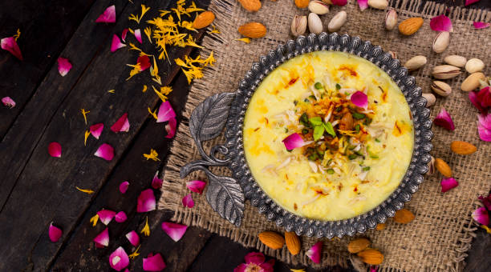

My self I am always ready to learn and understand new things and Understand the advantages of it.I beleive that time will give good consequences but we need to be patient and Identify then opportunities and bucketlist
Basundi is a sweet item which is made up of milk.It is mostly prepared at festival Days because of Sharing happy moment with family is needed for memories.It Covers all kinds of Nutrient portion in a single Scoope,Also we can use dry fruits and sugar as Intermediate ingridients.Finally From Old to Young generations all kinds of people were intrested to consume
